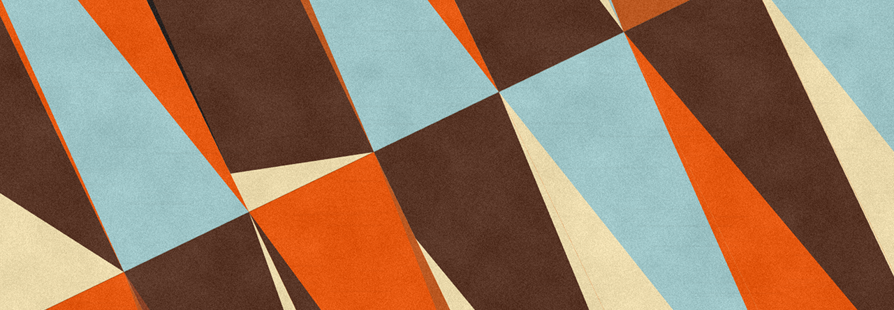
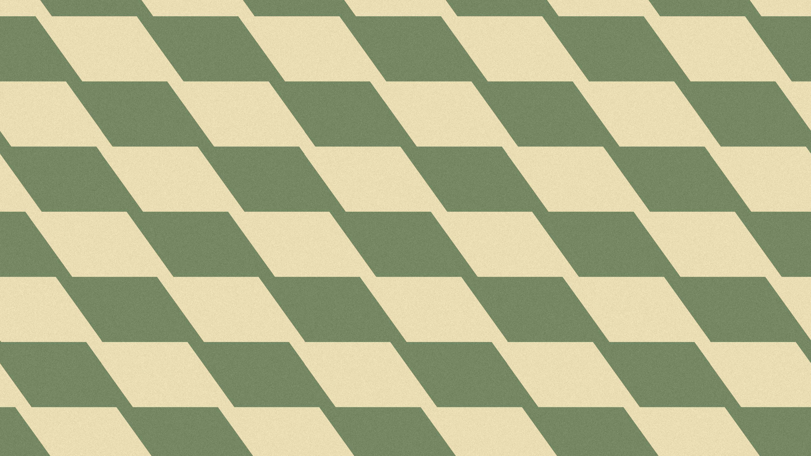

Verantwoord ontwerpen, ontwikkelen en gebruiken van digitale technologie.
Technologie is niet neutral, maar heeft effecten op het handelingsperspectief van de mensen (en niet-mensen) die direct of indirect met de technologie in aanraking komen. Technologie heeft daarmee altijd ook een maatschappelike en een ethische dimensie. Het lectoraat Responsible IT onderzockt hoe we bij het ontwerpen, ontwikkelen en gebruiken van digitale technologie, in het bijzonder Al, rekening kunnen houden met de ethische en maatschappelijke gevolgen van die technologie.
Lees hier in het bijzonder hoe AI, rekening kan houden met de ethische en maatschappelijke gevolgen van technologie.
Lees meer →Uitgelichte Studentenprojecten

Fashion Police
De opkomst van grootschalige taalmodellen en andere AI-gedreven technologieën heeft belangrijke maatschappelijke vragen opgeroepen over het gebruik van kunstmatige intelligentie in de media.
Lees meer →
AiAiAi
De opkomst van grootschalige taalmodellen en andere AI-gedreven technologieën heeft belangrijke maatschappelijke vragen opgeroepen over het gebruik van kunstmatige intelligentie in de media.
Lees meer →
RAAIT Dashboard
De opkomst van grootschalige taalmodellen en andere AI-gedreven technologieën heeft belangrijke maatschappelijke vragen opgeroepen over het gebruik van kunstmatige intelligentie in de media.
Lees meer →Uitgelichte Onderzoeksprojecten

AI en media: samenwerken voor een sterkere democratie
De opkomst van grootschalige taalmodellen en andere AI-gedreven technologieën heeft belangrijke maatschappelijke vragen opgeroepen over het gebruik van kunstmatige intelligentie in de media.
Lees meer →
Check-Out: Wifi Zonder Socials
De opkomst van grootschalige taalmodellen en andere AI-gedreven technologieën heeft belangrijke maatschappelijke vragen opgeroepen over het gebruik van kunstmatige intelligentie in de media.
Lees meer →
RAAIT - Responsible Applied Artificial InTelligence
Hoe kunnen we kunstmatige intelligentie ontwikkelen die niet alleen slim en efficiënt is, maar ook recht doet aan ethische en maatschappelijke waarden?
Lees meer →